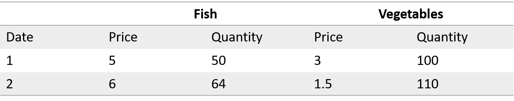
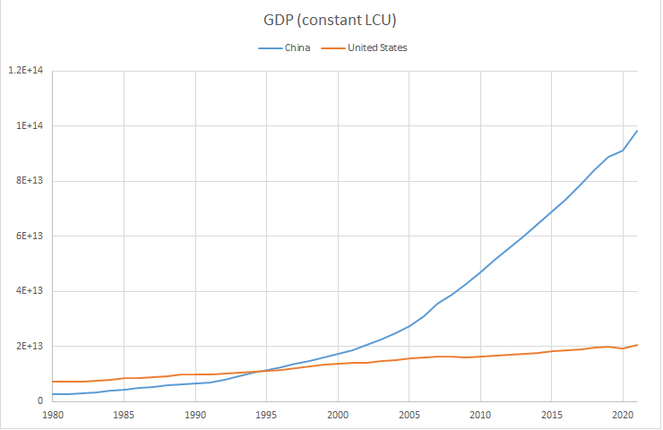
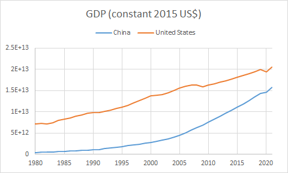
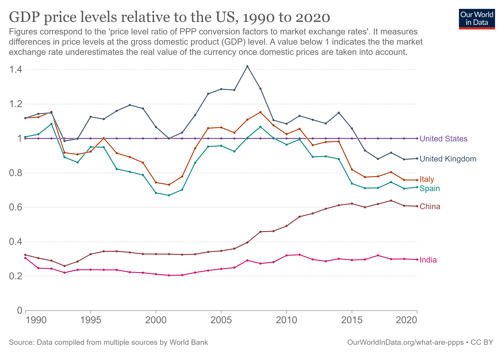

Measuring the Macroeconomy#
This chapter introduces concepts and data for measuring the economic performance of countries over long periods of time. We seek to measure the total value of goods and services that a nation produces and how this generates income and wellbeing for its citizens.
In this chapter we address the following questions:
How do economists measure economic performance?
What variables drive long-term economic growth?
Why do countries differ in their levels of prosperity?
By the end of this chapter you should be able to collect and use macroeconomic data to summarize national income. We will disentangle the role of price and quantity when measuring the total economic output of a country and discuss what adjustments are necessary to make macroeconomic data comparable across countries. After we understand how to measure long-run economic performance, subsequent chapters will focus on combining theory and data to quantify the sources of economic growth.
Measuring the Size of the Economy#
The most important measure of economic performance is called gross domestic product, or GDP, which measures the market value of all final goods and services produced within a country over a certain period of time.
Definition: Gross Domestic Product (GDP)
The total market value of all final goods and services produced within a country over a period of time.
This definition contains three important ideas:
Market value: Prices provide weights so that we can add apples, smartphones, and airplane tickets together.
Final goods and services: We count only goods purchased by the final user to avoid double-counting. For example, the value of flour is not included separately if it is used to bake bread that is sold.
Within a country: GDP measures production within national borders, regardless of whether the producer is foreign-owned.
GDP is a broad statistic: it captures the size of the economy, allows comparisons across countries, and provides insights into living standards and economic growth. Economists, policymakers, businesses, and journalists often refer to GDP because it helps answer key questions:
Is the economy expanding or contracting?
How does a country’s economic output compare to others?
Are people, on average, better off than in the past?
GDP is not a perfect measure of welfare, but it provides a useful baseline.
The way we compute GDP is to add up the value produced by every firm in the economy. But even this simple calculation poses important questions:
How do we separate the value contributed by a singe company from the value contributed by another when most goods involve supply chains?
How do we control for changes in prices (which are unrelated to the quantity of goods produced)?
Does GDP, which is a measure of production, give us any insight into how much income a country has?
Value Added and Supply Chains#
Modern economies are built on complex supply chains. To avoid counting the same production multiple times, economists use the concept of value added:
Definition: Value Added
The value of a firm’s output minus the value of intermediate goods purchased from other firms. The phone sells for 40 million yuan, and imported components cost 6 million yuan.
Example: Calculating Value Added for a Phone Manufacturer
Suppose a company assembles smartphones using parts imported from abroad.
Sales revenue |
40,000,000 |
|---|---|
Expenses |
26,000,000 |
Wages |
20,000,000 |
Cost of goods sold |
6,000,000 |
————– |
————– |
Net Income |
14,000,000 |
How much does this company contribute to GDP?
We base GDP on value added, not sales. To compute GDP for a country, we sum the value added of every production unit in the economy. Notice that we could have also measured value added as the sum of payments to labor and capital:
which shows that the value based on production and income are the same. More on this later…
Three Ways of Measuring GDP#
When we compare the GDPs of two countries, we presume that the country with the larger GDP produces more in some useful sense. Suppose Country A produces 10 billion apples and Country B produces 10 billion durian. Who produces more? We use market prices to tell us which goods are more valuable, apples or durian. Things can get tricky when prices do not reflect market forces. North Korea, for example, does not have market prices so assigning meaningful measure of GDP is difficult. Since every transaction has both a buyer and a seller, we can approach measuring value added from (at least) two directions.
Example: Imagine a rural economy made up of only farmers and fisherman. The farmers harvest vegetables while the fishermen catch fish.
How do we measure GDP for this economy?
How do we measure income (GNI) in this economy?
Annual GDP in this economy is the total value of vegetables and fish produced during the year. Assuming that all the vegetables and fish are sold (perhaps the fisherman buy vegetables, and the farmers buy fish), then the value of production must also equals the value of expenditure. Furthermore, since each purchase is money in the pocket of farmers and fishermen, we also have that the annual GDP is equal to total income in the economy.
GDP can be viewed from three complementary perspectives:
Production approach: Sum of value added across all firms.
Expenditure approach: Total spending on final goods and services.
Income approach: Total income earned by factors of production.
These three perspectives give rise to a fundamental accounting identity:
We can compute the size of an economy by either measuring the value added market value of goods and services produced, the amount spent on goods and services, or the amount of income earned.
Here is an example of different types of income:

In practice, small discrepancies arise due to imperfect data, which is why statistical agencies report a “statistical discrepancy.”
Categorizing Economic Output#
The most common way of categorizing expenditure is into four broad components:
Consumption (\(C\)) is spending by households on goods and services (e.g. I buy a Xiaomi 11)
Investment (\(I\)) is business spending on capital goods, plus residential construction and changes in inventories (e.g. construction of a new building or purchasing a new machine)
Government spending (\(G\)) is both consumption and investment done by the government (e.g. defense spending)
Net exports (\(NX\)) is the difference between what a country exports and what it imports
Here’s an example of expenditures for the United States

A fundamental macroeconomic identity relates the value of production to the value of expenditure:
Definition: National Expenditure Accounting Identify
The national accounting identity states that a countries total expenditure must equal its total production
where \(Y\) denotes GDP and \(C,I,G,\) and \(NX\) denote the different components of gross national national expenditure (GNE).


Flow of Funds#
We can also use the national accounting identity to reveal useful information about how much a country saves, which happens to be very relevant for international trade. We can write
where we define national savings to be national income (\(Y\)) less private consumption (\(C\)) and public consumption (\(G\)). This flow of funds identity
Definition: Flow of Funds Identify
A nation total savings equals its savings and trade flows
Identify {ref}’flow-of-funds-identity’ reveals something very interesting: a country’s ability to invest and purchase foreign goods is constrained by its savings. We can think of savings \(S=Y-C-G\) as a source of funds use to accumulate new capital (\(I\)) or purchase foreign goods (\(NX\)).
This identity does not imply causality. For example, low savings does not cause low output. These are accounting relationships, not behavioral laws.
Example: Calculating Value Added for a Phone Manufacturer
Let’s return to the phone manufacturer
Sales revenue |
40,000,000 |
|---|---|
Expenses |
26,000,000 |
Wages |
20,000,000 |
Cost of goods sold |
6,000,000 |
————– |
————– |
Net Income |
14,000,000 |
And now suppose that 10 million of the 40 million in sales are sold abroad; assume that investment and government spending are zero; and assume that this phone manufacturer is the only company in the economy.
What are GDP, GNE, GNI, S and NX?
There is no causal relationship implied by national accounting identities. For example, you can’t say that low consumption is causing low output based on the identity, because you could as easily say that consumption fell because output fell. Don’t reach for causal conclusions using identities.
GDP excludes the underground economy—economic activities that are not reported. In some developing economies these underground economies can be quite large.
Capital gains are excluded from GDP and savings, because they do not reflect the production and sale of current output. Interestingly, net worth can rise or fall even when savings is zero.
Controlling for Prices: Real vs. Nominal GDP#
Usually when economists refer to GDP, they are talking about real GDP. Real GDP controls for the effect of changing prices in order to more accurately measure the production of goods and services. Nominal GDP, on the other hand, measures GDP before prices have been controlled for and thus captures the monetary value (as opposed to real value) of production within a country.
Notice that nominal GDP is affected when prices change, even if the amount of production does not change! It’s very important to control for changing prices in order to get an accurate measure of the quantity of goods and services produced.
How do we control for changing prices? We pick a year, called a **base year&&, and use the same set of prices to compute real GDP over time. If we want to measure how an economy has growth between 2021 and 2022, then we pick either the 2021 prices or the 2022 prices and use it to compute real GDP in both years.
Let’s consider our economy of farmers and fisherman with the following activity over two years:

Nominal GDP in this economy would equal
which suggests that the economy has shrunk, but clearly this statistic is imperfect because production of both fish and vegetables increased!
We can compute real GDP using Date 1 base prices:
which correctly shows an increase in production.
Economists have some fancy names depending on which year you pick to use as base prices:
Using initial prices is called Laspeyres index
Using current prices is called Paasche index
Using an average of Laspeyres and Paasche is called *chain weighting or the Fisher index
Suppose we want to use chain-weighting to compute real GDP for our economy.
Compute growth rates implied by the Laspeyres and Paasceh index
Compute the average of the two growth rates:
Find the level \(x\) such that if it were to grow at 18.5%, it would equal the Date 2 level of nominal GDP
so we would say that real GDP at Date 1 was 463.
Chain weighting is especially useful when evaluating how an economy grows over a long period of time. In this case, you would apply this chain-weighting procedure for each year (e.g. real GDP in 2022 is computed using prices from 2021 and 2022, real GDP in 2021 is computed using prices from 2020 and 2021 and so on). Why is it useful? Imagine you want to compare GDP in 1960 to GDP in 2022. In 1960 computers were extremely expensive relative to other goods, while in 2022 they are relatively much cheaper. Using a Laspeyres index (1960 prices) would produce very fast growth for real GDP, while the Paasche index (2022 prices) would produce much slower growth. Chain weighting gives and average and therefore reduces the impact of extreme movements in relative prices.
Comparing GDP Across Countries#
Of particular interest to international economics is comparing the economic performance of different countries. This introduces some additional difficulties…
Let’s try to compare the national output of China to the United States:

Obvious problem: the data is in different currencies! First we need to express GDP in a common currency. We can do so making using of an \textbf{exchange rate}—the price at which one currency trades for another currency. Example: The average exchange rate between the Chinese yuan and the U.S. dollar in 2021 was 6.452, which means that $1 can buy 6.452 RMB.
Using yearly average exchange rates we can plot GDP in a common currency:

Another problem: we are not controlling for price differences between the two countries. It’s very likely that local relative prices will differ between the two countries.
Example: Suppose that food is significantly cheaper in China compared to the U.S. Even if China and the U.S. produce the same quantity of food, so that real food output is identical, there will be differences if we use local prices.
Instead of using market exchange rates, economists will create a hypothetical currency, called \textbf{international dollars}, and use this as a common unit of measure. The idea is that a given amount of international dollars should buy roughly the same amount—and quality—of goods and services in any country. The exchange rates used to translate nominal values into international dollars are purchasing power parity conversion rates, or PPP conversion factors.
Purchasing power refers to the amount of goods and services a person can buy with their money.
Example: If a Chinese citizen takes a vacation to Canada, they will probably find that food costs a lot more than at home. That is, 100 RMB is able to purchase less food in Canada than China.
If we care about measuring economic performance, then we should consider how many goods and services a person can buy with their money \textit{locally}.
The Economist magazine began publishing the Big Mac Index in 1986 as a way of measuring how purchasing power varies from country to country.
First, measure the actual local prices of a Big Mac in different countries. In 2022, a Big Mac costs 3.69 pounds in Britain, and costs 5.15 dollars in the United States.
Second, compute the implied exchange rate: \(3.69/5.15 = 0.72\).
Third, measure the difference between the implied exchange rate and the actual exchange rate. In 2022, the exchange rate between the British pound and US dollar was 0.83, therefore the British pound is 13% undervalued according to the Big Mac index.
(You can check out https://www.economist.com/big-mac-index)

Of course we don’t need to limit ourselves to Big Macs; we can use price data on a broader array of goods and services to measure price level differences across countries. This is precisely the job of the International Comparison Programme (ICP)—construct price indexes that summarize prices in each country relative to a reference country, typically the United States.

Now we can see how to construct an appropriate measurement used to compare GDP across countries:
First, convert GDPs into a common currency $\( NGDP_{\text{China}}^{\text{dollars}}=EX_{\$/rmb} \times NGDP_{\text{China}}^{\text{rmb}} \)$
Second, adjust for local price differences \begin{align*} RGDP_{\text{China}}^{\text{U.S. prices}} &=\text{price level}{\text{U.S.}}\times RGDP{\text{China}} \ &= \text{price level}{\text{U.S.}} \times \frac{NGDP{\text{China}}^{\text{dollars}}}{\text{price level}{\text{China}}} \ &=\frac{\text{price level}{\text{U.S.}}}{\text{price level}{\text{China}}}\times NGDP{\text{China}}^{\text{dollars}} \end{align*}
From the International Comparison Programme (ICP): “Purchasing power parity exchange rates, or PPPs, are price indexes that summarize prices in each country relative to a numeraire country, typically the United States. These numbers are used to compare living standards across countries, by academics in studies of economic growth, particularly through the Penn World Table, by the World Bank to construct measures of global poverty, by the European Union to redistribute resources, and by the international development community to draw attention to discrepancies between rich and poor countries.”
(You can check out https://data.worldbank.org/indicator/NY.GDP.MKTP.KN too see the different measures of GDP for countries)
Key takeways:
GDP is the most widely used measure of economic performance and can be measured as production, expenditure, or income.
National accounting identities reveal relationships among consumption, investment, savings, and trade, but do not imply causality.
Real GDP adjusts for changing prices using index numbers such as Laspeyres, Paasche, and Fisher indices.
Cross-country comparisons require PPP adjustments to account for local price differences.
Suggested Exercises
In a two-good economy (fish and vegetables), compute nominal and real GDP for two years using both Laspeyres and Paasche indices. Which index overstates growth? Why?
Suppose a country runs a trade deficit (\(NX<0\)). Use the flow of funds identity to explain what must be happening to savings and investment.
Compare GDP per capita between China and the US using both market exchange rates and PPP conversion. Which measure is more appropriate for assessing living standards?
Investigate the Big Mac Index for your own country. Is your currency over- or undervalued relative to the dollar?
| Gross domestic income | 29001.7 | |
|---|---|---|
| 0 | Compensation of employees, paid | 15049.1 |
| 1 | Wages and salaries | 12410.0 |
| 2 | To persons | 12379.2 |
| 3 | To the rest of the world | 30.8 |
| 4 | Supplements to wages and salaries | 2639.1 |
| 5 | Taxes on production and imports | 1954.7 |
| 6 | Less: Subsidies1 | 94.2 |
| 7 | Net operating surplus | 7295.4 |
| 8 | Private enterprises | 7342.9 |
| 9 | Net interest and miscellaneous payment... | 611.1 |
| 10 | Business current transfer payments (net) | 286.4 |
| 11 | Proprietors' income with inventory val... | 2023.1 |
| 12 | Rental income of persons with capital ... | 1078.1 |
| 13 | Corporate profits with inventory valua... | 3344.2 |
| 14 | Taxes on corporate income | 680.3 |
| 15 | Profits after tax with inventory v... | 2663.8 |
| 16 | Net dividends | 1880.0 |
| 17 | Undistributed corporate profit... | 783.8 |
| 18 | Current surplus of government enterprises1 | -47.5 |
| 19 | Consumption of fixed capital | 4796.7 |
| 20 | Private | 3992.9 |
| 21 | Government | 803.8 |
| 22 | Addendum: | NaN |
| 23 | Statistical discrepancy | 296.3 |
Visualizing GDP Data#
For a technical deep-dive into how to collect and plot this data yourself, please refer to the GDP Data Tutorial.